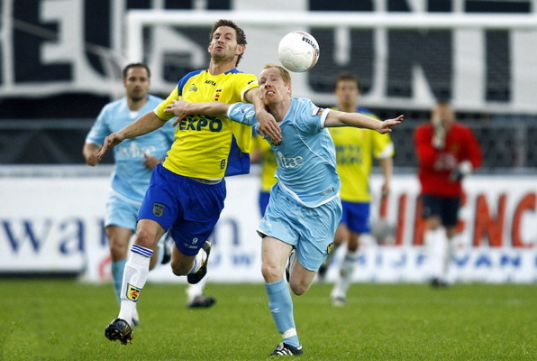
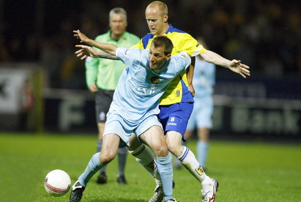
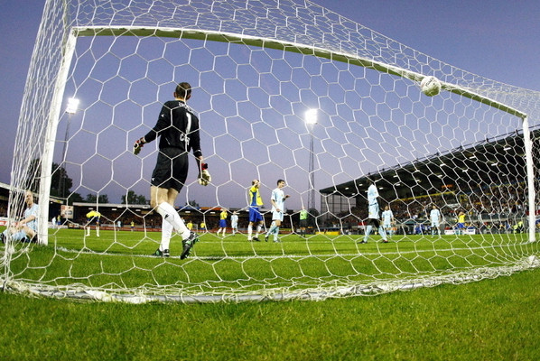

|
|
|||
  
SC Cambuur heeft in eigen huis nagelaten Roda JC schrik aan te jagen. In de
derde en beslissende ronde van de play-offs voor promotie/degradatie werd
het in Leeuwarden in het eerste duel 0-0. Zondag is de return in het
Parkstad Limburg Stadion. Het elftal van de van een schorsing teruggekeerde
Harm van Veldhoven kwam goed weg. Cambuur, onder leiding van Stanley Menzo,
kreeg de beste kansen, waarvan misschien wel de grootste voor Jeffrey de
Visscher. De buitenspeler had de bal in de tweede helft, nadat Sandor van
der Heide de lat raakte, voor het inschieten. De Visscher trapte echter
naast. Roda beperkte zich vooral tot tegenhouden en snelle uitvallen. |
|
||